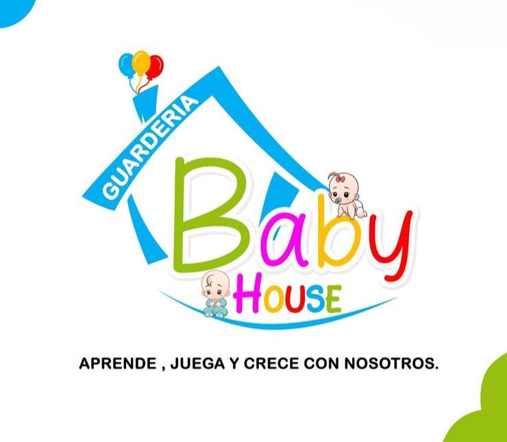

<ion-app>
  <ion-split-pane contentId="main-content">
    @if(availableMenu) {
    <!-- <ion-menu contentId="main-content" type="overlay" >
      <ion-content>
        <ion-list id="inbox-list">
          
          <ion-list-header class="mb-3">DayCare System</ion-list-header>
          <hr>

          @for(option of menuOptions; track option) {
          <ion-menu-toggle auto-hide="false" style="margin-top: -20px;" >
            @if(option.menu) {
            <ion-item routerDirection="root" (click)="handleItemSelected(option)" lines="none" detail="false" routerLinkActive="selected">
               
              <ion-icon slot="start" [name]="option.icon"></ion-icon>
              <ion-label><b>{{ option.title }}</b></ion-label>
            </ion-item>
          }
          </ion-menu-toggle>
        }
        </ion-list>
      </ion-content>

      <ion-footer class="ion-no-border mb-5">
        <ion-toolbar>
          <ion-title>v{{version}} </ion-title>
        </ion-toolbar>
      </ion-footer>
    </ion-menu> -->

    <ion-menu contentId="main-content" type="overlay">
      <ion-content class="menu-content">
        <!-- Header con gradiente -->
        <div class="menu-header">
          <div class="logo-container">
            
          </div>
          <h1 class="brand-name">Baby House</h1>
          <p class="brand-subtitle">Sistema de Gestión</p>
        </div>

        <!-- Menu Items -->
        <ion-list class="menu-list">
          <div class="menu-section-title">
            <ion-icon name="grid-outline"></ion-icon>
            <span>MÓDULOS PRINCIPALES</span>
          </div>

          @for(option of menuOptions; track option) {
          <ion-menu-toggle auto-hide="false">
            @if(option.menu) {
            <ion-item routerDirection="root" (click)="handleItemSelected(option)" lines="none" detail="false"
              routerLinkActive="selected" class="menu-item">
              <div class="item-content">
                <div class="icon-wrapper" [attr.data-color]="getIconColor(option.icon)">
                  <ion-icon [name]="option.icon"></ion-icon>
                </div>
                <div class="item-text">
                  <ion-label class="item-label">{{ option.title }}</ion-label>
                  <span class="item-description">{{ getDescription(option.title) }}</span>
                </div>
                <ion-icon name="chevron-forward-outline" class="arrow-icon"></ion-icon>
              </div>
            </ion-item>
            }
          </ion-menu-toggle>
          }
        </ion-list>

        <!-- Decorative gradient line -->
        <div class="gradient-divider"></div>
      </ion-content>

      <!-- Footer -->
      <ion-footer class="menu-footer">
        <div class="footer-content">
          <div class="footer-info">
            <ion-icon name="shield-checkmark-outline" class="shield-icon"></ion-icon>
            <div class="footer-text">
              <p class="footer-label">Sistema Seguro</p>
              <p class="footer-version">Versión {{version}}</p>
            </div>
          </div>
          <div class="footer-badge">
            <ion-icon name="checkmark-circle" class="check-icon"></ion-icon>
            <span>Activo</span>
          </div>
        </div>
      </ion-footer>
    </ion-menu>

    }
    <ion-router-outlet id="main-content"></ion-router-outlet>

  </ion-split-pane>
</ion-app>
<!-- <app-kuido-tab></app-kuido-tab> colocar el mtop:100 fixed para que siempre este ahi. -->